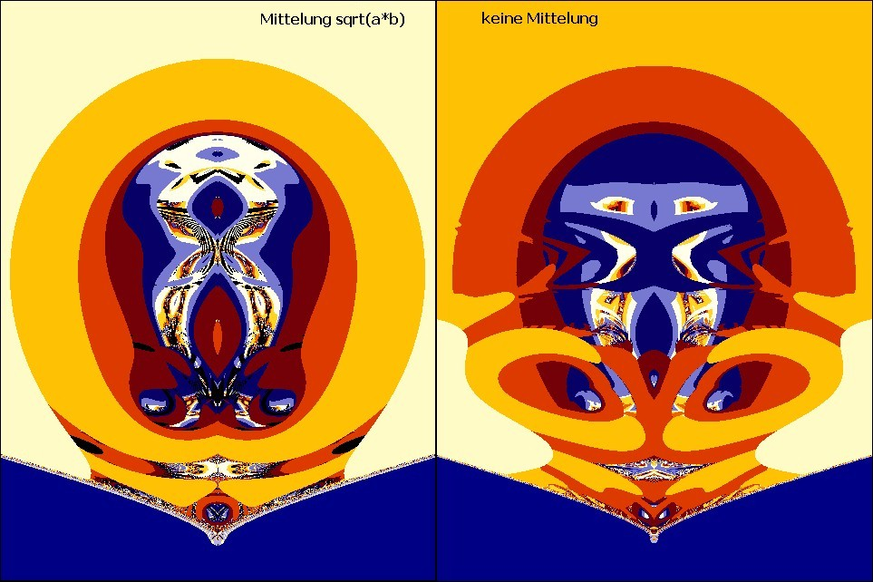
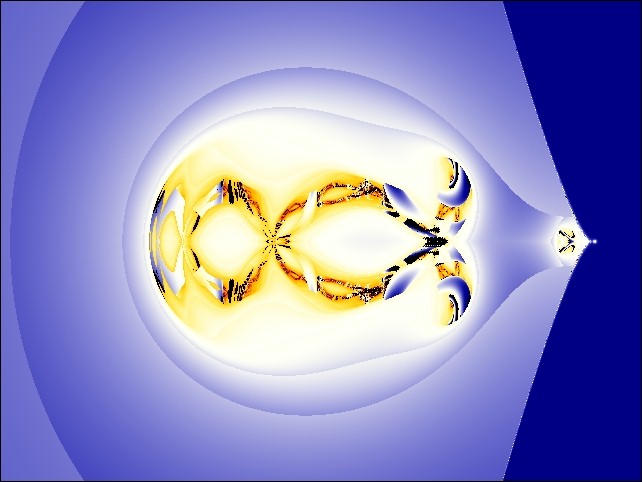
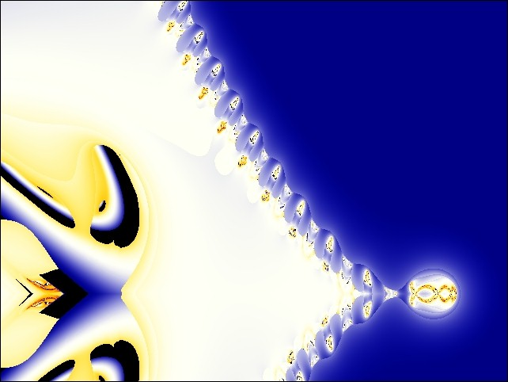
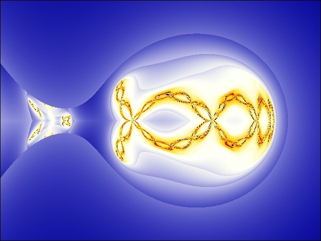
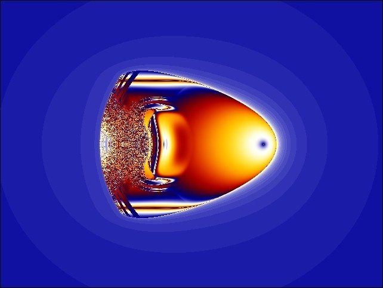
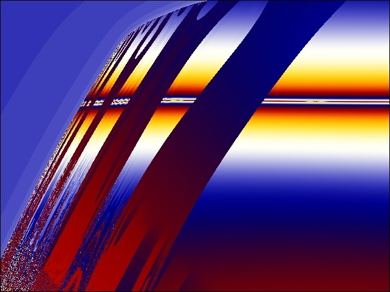
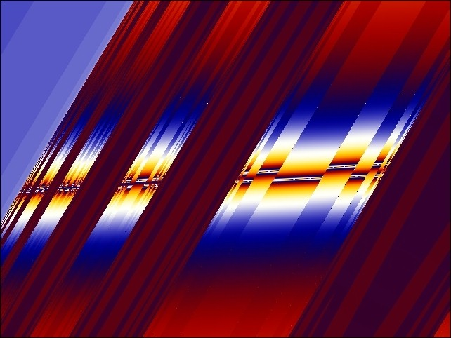

Programmvariante
Zwillingsverfahren
mit gleichem Koppelanteil
Kopf Z = Z ^ (Z*) - 1
Zwillingsverfahren:
Zwei identische Rekursionen (z und z2) werden parallel gerechnet und
gegenseitig
verkoppelt (Faktor koppl), die eine additiv, die andere subtraktiv
(=gerichteter
Energiefluss zwischen benachbarten Zellen; jeder Rasterpunkt als Zelle betrachtet).
Gemeint ist nicht eine iterative Vermischung der Bildpunkte,
sondern quasi
senkrecht zur Bildebene eine zweite Ebene von Rekursionen,
zwischen denen
ein Austausch besteht.
Der Anteil (@koppl * z) flieflt aus der z2-Ebene heraus
und der Anteil (@koppl * z2)
flieflt in die z-Ebene hinein. Also ein Koppel-Fluss
vertikal zur Bildebene. Soweit die Bilder bisher.
Neu: Beim Verfahren mit gleichem Koppelanteil wird vorher zwischen z und z2 gemittelt:
init: ... |

In folgenden Bildern ist die Abbruchgrenze Bailout = 7 und koppl = 0.01
 Bildmittelpunkt (-170, 0), Vergrößerungsfaktor magn = 0.01
 Detail vom letzten Bild (Spitze rechts)
 Detail vom Bild vorher; Bildmittelpunkt (0.35, 0), Vergrößerungsfaktor magn = 1
Auge Z = Z *(Z*) + C xmitt
= (x+x2) / 2 koppl=0.5, Bailout = 1.0E+9
 Auge mit Mittelung m=(a+b)/2 Vergleich
 Detail
 Detail vom Detail
Hier das
Auge mit Mittelwert m = sqrt(a*b) bei koppl=0.5. Es ist sehr unsymmetrisch. Hier
mit m = (a+b)/2 vom Apfelmännchen bei koppl=0.5 .
Gabi Müller 01.06.09 |
{kind=link}
{kind=link}
{kind=link}
{kind=link}